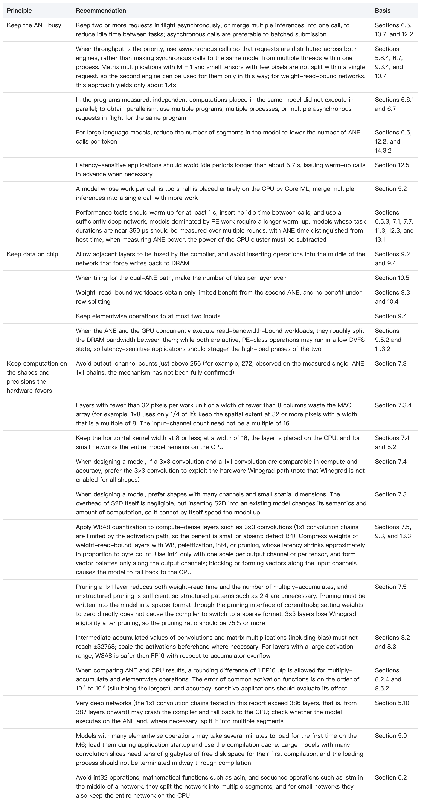
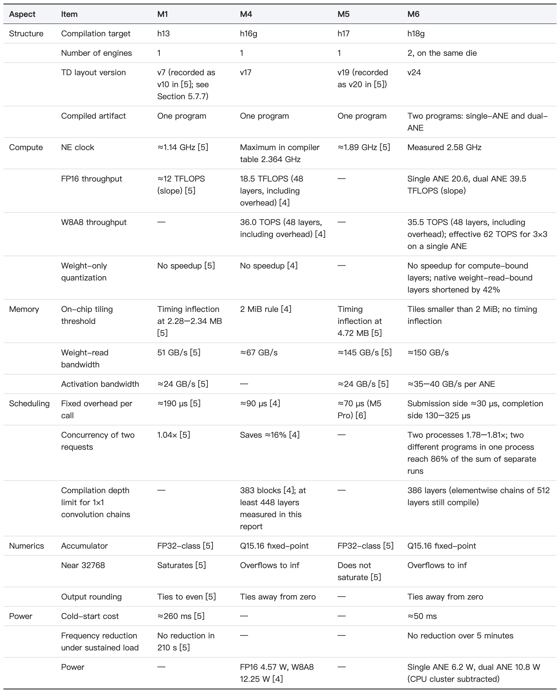
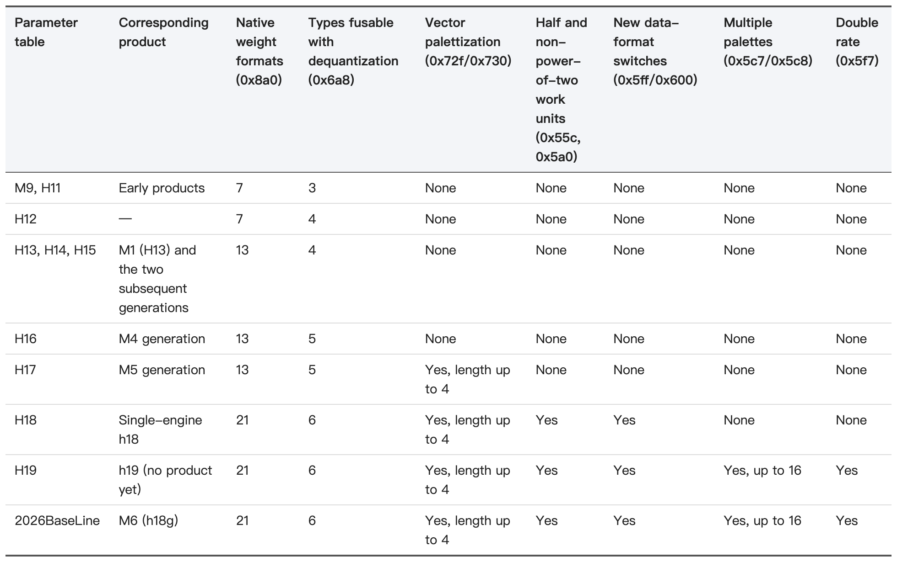
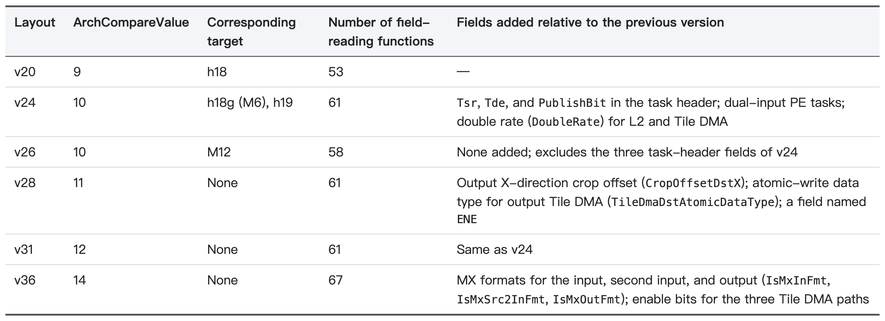
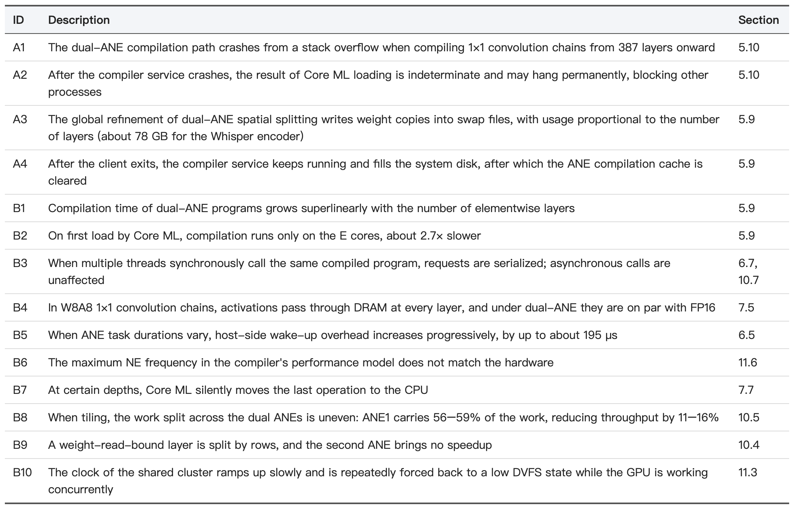
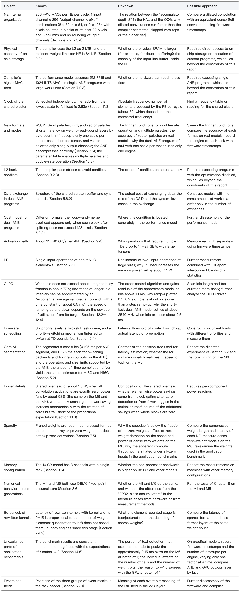

This post is chapter 15, 16, 17 of the report "Microarchitecture of the Apple M6 Neural Engine: An Empirical Study Based on Compiled Artifacts, Execution Traces, and Power Measurements", reproduced unchanged. Full report: web; data and tools: GitHub. Section, figure and table numbers follow the report.
15. Discussion
Chapters 4–13 follow the lifecycle of a single inference call and examine, in turn, the compilation, scheduling, computation, numerics, memory, dual-engine cooperation, clocking, frequency scaling, and power of the M6 ANE. Chapter 14 then tests these findings on application workloads. This chapter does not repeat the conclusions of the individual chapters. Instead, it considers three questions together: which overall characteristics of the M6 ANE design these results reveal; what these characteristics imply for deploying models on the ANE; and what the M6 changes from, and retains of, earlier generations. Finally, this chapter summarizes the defects and undocumented behaviors found in the experiments and analyzes their common root causes.
15.1 Design Characteristics of the M6 ANE
Taken together, the experimental results of the individual chapters support the overall judgment presented in Section 1.3. The M6 ANE can be summarized by three interrelated system characteristics. This grouping does not correspond item by item to the three aspects of Section 1.3; it is reorganized according to the experimental results. First, the static arrangements of the compiler and the dynamic management on the host side jointly determine how the ANE actually executes, so the two are discussed together as decision mechanisms outside the ANE. Second, the two ANEs are not fully independent; they share some key resources. Third, the compiler's model of hardware performance contains biases, so static scheduling itself can become a source of performance loss.
First, the ANE is a configuration engine that is statically scheduled by the compiler and dynamically managed by the host. At the execution level, the ANE makes almost no decisions of its own. A program is a sequence of register writes fixed at compile time, with no instructions and no branches (Chapter 5). The order of execution is determined by the task descriptor sequence arranged by the compiler. In the programs tested in this report, the parallelism that can be observed among functional units occurs only within the pipeline of a single task (Chapter 6; whole-graph timing cannot determine whether the hardware can overlap tasks). In dual-engine programs, the split scheme and the amount of work assigned to each engine are also fixed at compile time (Chapters 5 and 10). At the management level, decisions likewise lie outside the ANE. The priority of requests, the engine on which they execute, and the program variant are selected by the host driver. The DVFS state and the throttling ratio are determined by the CLPC in the host kernel, and the ANE firmware is responsible only for queuing and dispatch (Chapters 6 and 12). This division of labor allows the hardware to remain simple, but it also means that the practical performance of the ANE depends to a large extent on two external factors: the quality of the compiler's decisions and the manner in which the host submits requests.
Second, the two engines are independent in computation but share resources. Each ANE has its own 16 NEs, an L2 that the compiler uses at 2 MiB, and an independent NE clock performance domain. On compute-bound workloads, the two engines can reach a speedup of 1.92×, with a scaling efficiency of about 96% (Chapter 10). However, the two engines share more resources than their block diagrams suggest. The weight-read bandwidth (about 150 GB/s) is shared by both. The clock domain in which the PE resides is independent of the two NE clock schedules, and we speculate that it is the shared cluster that the CLPC treats as common to both ANEs. A difference-based estimate indicates that about 1.6 W of power is shared by both, and its source is unknown. The driver's power-off and maintenance timers also act on both engines in synchrony (Chapters 9, 11, 12, and 13). Accordingly, the "two ANEs" are closer to "two compute arrays on one memory system" than to two fully independent accelerators. For any workload limited by a shared resource, such as weight-read-bound LLM decoding, the benefit obtained from the second engine is very limited. A convolution chain with distinct weights per layer on a dual-ANE program gains about 1.4× (timing slope, including host-side effects), and rewritten kernels split by rows gain no speedup. Request-level concurrency yields about 1.4×, and nearly all of it comes from eliminating host idle time.
Third, there is a systematic gap between the compiler's cost model and the actual behavior of the hardware. The compiler assumes that the maximum NE frequency is 2508 MHz, whereas the hardware operates at 2580 MHz. It assumes that the L2 and the PE vary in frequency with the NE at a fixed ratio, whereas in measurements the PE clock is scheduled independently. It assumes that the two ANEs execute completely in parallel after splitting and do not interfere with each other, whereas in fact they share weight-read bandwidth. The performance model does not account for the hardware Winograd path or for sparse zero-skipping, so it overestimates the time of 3×3 and pruned layers by 1.4–4.5×. Its estimate of activation DMA bandwidth, by contrast, is optimistic by about 3× (Chapters 5, 7, 9, and 11; Table 7-13). Among these gaps, the assumption that "the two ANEs do not interfere with each other" has the most serious consequence: it leads the compiler to choose row splitting for weight-read-bound layers, so the second engine brings no speedup at all (defect B9). These gaps indicate that the compiler's cost model reads more like a simplified estimate than a precise model of the hardware, with deviations that do not point in a consistent direction across stages.
15.2 Recommendations for Model Deployment
The conclusions of the individual chapters can be condensed into three deployment principles: keep the ANE busy, keep data on chip, and keep computation on the shapes and precisions the hardware favors. Table 15-1 summarizes the concrete recommendations derived from these three principles, together with their basis.
Table 15-1. Summary of deployment recommendations

Of the three principles, the first is the most easily overlooked and has the greatest impact. Intuitively, the speed of the ANE should be determined by the model itself. However, Section 12.2 shows that host-side idle time inherent between synchronous calls causes a model whose tasks are shorter than about 1.3 ms to struggle to hold the top state, even under consecutive calls. In other words, how fast the same model runs on the ANE depends on how the host calls it. Chapter 13 further shows that the main energy cost of frequent small calls lies on the CPU side. The conclusions of both lines point in the same direction: reducing the number of calls and increasing the work per call improves speed and reduces energy.
On the other hand, there is a clear trade-off between energy efficiency and latency. When the CLPC selects a low DVFS state, the ANE energy per inference is about one third of that at the top state, while latency increases by about 2.2–2.9× (Section 13.4). For applications with relaxed latency requirements and sensitivity to energy, such as background processing or sustained inference on battery power, allowing the ANE to run in a low DVFS state is in fact the better choice. Applications need not do anything to achieve this: as long as there is sufficient idle time between requests, the CLPC steps down automatically.
15.3 Comparison with Earlier Generations
Table 15-2 compares the M6 with the M1, the M4, and the M5 across six aspects: structure, compute, memory, scheduling, numerics, and power. The data for the M1 and the M5 come from Bryngelson [5]. The data for the M4 come from maderix [4] and from control experiments on the M4 in this report, and the data for the M6 come from this report. Measurement methods differ across sources, particularly in the definitions of throughput and power, so the notes should be consulted when comparing across columns.
Table 15-2. ANE comparison of the M1, M4, M5, and M6

As Table 15-2 shows, the changes in the M6 are concentrated in two areas. The first is an increase in scale: a second engine was added, the NE clock was raised to 2.58 GHz, and the DRAM bandwidth was raised to 170.5 GB/s, which in turn led to compilation of separate single-ANE and dual-ANE programs. The second is the software machinery built around the second engine: the compiler gained split and synchronization steps, and the driver gained engine selection and variant selection. At the same time, the core design inside the ANE has remained essentially unchanged. The 16 NEs per engine, the 64 KiB weight buffer per NE, the 2 MiB single-operand limit, the 64 L2 banks, and the Q15.16 fixed-point accumulator are all identical to those of the M4. The activation functions likewise have the same 33-point lookup-table structure (for the M4, according to maderix [4]). Constants in the HAL parameter table related to the MAC array, the L2, and bandwidth have also not changed from H16 to H18 (Section 5.4). The changes in the parameter tables from H17 to H18 are concentrated in the flexibility of work-unit partitioning and in the supported weight formats, which are discussed separately below.
Several differences in the table require careful interpretation. The accumulators of the M1 and the M5 are described as "FP32-class," whereas this report measured the M4 and the M6 as Q15.16 fixed-point. Because the test methods differ, and because the "saturation at 32768" reported by Bryngelson corresponds exactly to the upper limit of the integer part of Q15.16, we cannot determine whether this reflects a genuine change across generations or a difference in measurement convention (Section 8.6). The fixed overhead per call cannot be compared directly across generations either, because the studies define and time the overhead differently (Section 6.8). With respect to power, this report found that on the M4, PP0b likewise supplies both the ANE and the CPU cluster. The studies use different power sources and subtraction methods, so the power values of the M4 and the M6 should likewise not be compared directly (Section 13.7).
While the compute array and the memory structure remain unchanged, the data formats and execution modes supported by the ANE have continually increased across generations, which forms another thread running through the generations. Table 15-3 lists the values, in each generation, of the HAL parameter table fields that reflect this trend (the data come from raw exports of each generation's parameter table; see Section 5.4) 〔HAL〕.
Table 15-3. Fields of the HAL parameter table related to data formats and execution modes

In the table, the first two columns are fields stored as lists, and the table gives the length of each list. The list at offset 0x8a0 is read by functions such as NeedsUpcastingFrom3bitPaletteTo4bitPalette, and we infer that it contains identifiers of the weight formats natively supported by the hardware. The list at offset 0x6a8 is read by HandleL2Config and IsFusableToDequant, and we infer that it lists the weight types that can be fused with dequantization operations 〔HAL, inferred〕. The remaining columns are capability switches in the parameter table, whose meanings are inferred from the names of the functions that read them.
Table 15-3 reveals three regularities. First, capabilities only accumulate: the lengths of both lists never decrease across generations, and each new generation's list contains all elements of the previous one. The number of native weight formats rises from 7 in early products to 13 in H13 and then to 21 in H18, and the number of types fusable with dequantization increases from 3 to 6 step by step. The names of the reading functions reveal a concrete consequence of the added formats: before H18, 3-bit palettized weights had to be upcast to 4-bit palettes before they could execute, a step that is no longer required from H18 onward. Second, new capabilities are introduced in batches across generations. Vector palettization appears in H17; half work units, non-power-of-two work units, and the new data-format switches appear in H18; and multiple palettes and double rate appear in H19. Beyond the fields listed in the table, H19 also relaxes the size of FIFO buffers (offset 0x888) and the dimension limits for gather and texture operations (offsets 0x1a8–0x1b8). Third, the 2026BaseLine parameter table used by the M6 matches H19 in all of these fields, rather than matching H18, the single-engine target of the same generation (Section 5.4). Consequently, in compiler parameters the M6 already matches the H19 generation, with switches for its full set of data formats and execution modes. Whether all of these capabilities can be used on the hardware is discussed below.
The combined effect of these changes is to make the ANE increasingly flexible in practical use. More native weight formats mean that more compressed models can execute directly on the ANE without upcasting, thereby reducing the amount of weight storage and weight reads. Chapters 9 and 10 show that weight-read bandwidth is precisely the bottleneck for workloads such as LLM decoding; therefore, extending weight formats matters more for such workloads than an increase in compute throughput. More flexible work-unit partitioning enables tensors of irregular shape and small size to use the 16 NEs more fully. The measurements in Section 7.5 provide direct support for this judgment. On weight-read-bound layers, W8 and 6-, 4-, 3-, and 2-bit palettes are all read in their compressed formats, and the time per layer shrinks approximately in proportion to the number of bytes; a 2-bit palette requires only 16% of the FP16 time. int4 and vector palettization can also be used, but with constraints: int4 accepts only one scale per output channel or per tensor, and vector palettes can form vectors only along the output channels; under these constraints their per-layer times are about 0.3× and 0.18–0.19× FP16, respectively. However, not every format enabled in the parameter table has a measured benefit: the double-rate mode was not triggered (Section 5.7.3). The MX format fields appear only in the newer v36 layout, and the v24 layout of the M6 has no corresponding fields; their practical benefit on the hardware remains to be measured.
Table 15-3 compares the fields one column at a time. To obtain a complete view of the changes from the M4 to the M6, we also compared the H16g parameter table used for the M4 with the 2026BaseLine parameter table used for the M6, byte by byte. The two differ in 81 8-byte words. Excluding pointers such as table names and list addresses, the field-reading functions of 41 fields had already been identified in Section 5.4, and for another 24 no reading function has been determined 〔HAL〕. We wrote a tool that scans the entire compiler code by offset, searching for load instructions of the form "base register plus this offset" (immscan2.c), and it located reading functions for 14 of these fields 〔HAL, inferred〕. Beyond the formats and execution modes already listed in Table 15-3, these differences include three batches of switches. H17 (the M5 generation) added zero-weight detection (offset 0x72c, whose reading function is EnableOnTheFlySparseEncodingIfPossible), multicast (0x72b), and a new event format, and it removed several hardware-erratum workarounds that the M4 carried. H18 added a double-Int8 mode (0x55d, whose reading function is CanUseDoubleInt8Mode). The 2026BaseLine added accelerated texture sampling (0x7a0) and a group of new cache-prefetch DMA parameters (0x668–0x688 and two new configuration lists) 〔HAL, inferred〕.
The meanings of fields can usually be inferred only from the names of the functions that read them. For zero-weight detection, we performed a causal test (Section 3.2). When compiling for h18g on the M4, we restored to their M4 values the numerical fields in the in-process parameter table that differ from the M4, and the zero-weight detection bit of the convolution TD (Section 7.5) changed from 1 to 0. After bisection by group and by byte, only the single byte at offset 0x72c determines this result (tool: halpatch_lldb.py) 〔compiler〕. Accordingly, zero-weight detection is enabled from H17 onward and is not enabled on the M4, which is consistent with the compilation results for the two targets in Section 7.5. The correspondence between other fields and measured behavior cannot yet be determined. For example, the double-Int8 mode is enabled only in parameter tables from H18 onward, yet the measured W8A8 throughput of a 48-layer, 1024-channel chain on the M4 (36.0 TOPS) is likewise about 2× that of FP16 for the same shape (18.5 TFLOPS) (Table 7-12, maderix [4]). The double-Int8 mode therefore does not account for the doubling of INT8 throughput, and its actual effect was not measured in this report. The meanings of fields such as those at offsets 0x72d, 0x820, 0x830, and 0x610 also remain unclear.
The compiler also reveals what hardware beyond the M6 may support. As described in Section 5.7.7, besides the v24 layout used by the M6 and H19, this version of the compiler implements four TD layouts: v26, v28, v31, and v36. By the compiler's internal ArchCompareValue, v24 and v26 are 10, v28 is 11, v31 is 12, and v36 is 14. Thus v28, v31, and v36 are architectures newer than the M6, whereas v26 belongs to the same generation as the M6. The v26 layout corresponds to the internal compiler target M12, while v28, v31, and v36 have neither an external target name nor a corresponding HAL parameter table 〔compiler〕. This version of the compiler contains no target named H20, so we cannot determine which of these layouts corresponds to H20. Nevertheless, the compiler defines a set of field-reading functions for each layout version (ZinGetRegisterProgramming<N>::GetXxx, Section 5.7.3), and comparing the functions added or removed between versions shows which hardware fields each new layout adds. Table 15-4 lists the results of this comparison.
Table 15-4. Field-reading functions of each TD layout version in the compiler

Three inferences about subsequent hardware can be drawn from Table 15-4 〔compiler, inferred〕. First, the newest v36 layout contains fields for microscaling (MX) data formats, and the input, second input, and output can each specify a format independently. On this basis, we speculate that the corresponding hardware will support MX formats. MX is a family of block-scaled formats defined by the Open Compute Project (OCP), including MXFP8, MXFP6, MXFP4, and MXINT8, among others, in which each small block of elements shares one scale factor. Combined with the trend in Table 15-3 of native weight formats increasing with each generation, if this speculation holds, subsequent ANEs will be able to compute and read and write directly in floating-point formats of 8 bits or fewer, rather than only storing weights in low-bit-width formats. However, the fields in the compiler show only that code generation has been prepared for this; whether the hardware implements it, and when it will ship, cannot currently be confirmed. Second, the v28 layout adds an atomic-write data type for output Tile DMA, and we speculate that subsequent hardware may atomically accumulate results into the output tensor in DRAM. Section 5.8.2 shows that the dual-ANE program on the M6, when reducing along the height, requires ANE1 to write partial sums to a shared scratch buffer, after which ANE0 aggregates them. If outputs can be accumulated atomically, this kind of cross-engine reduction would no longer need to be performed centrally by one engine. The v28 layout also adds a crop offset for the output in the X direction, which corresponds to the capability "cropping of outputs not aligned in the X direction" added to the H18 parameter table. The meaning of the ENE field cannot be determined from its name. Third, the three fields added in v28 do not appear in the newer v31 and v36 layouts, and the set of field-reading functions in v31 is identical to that of v24. This shows that these layouts do not evolve strictly in sequence; v28 may belong to a separate product line, whereas v31 and v36 are more likely successors within the product line of the M6.
It should be emphasized that the field-reading functions cover only the fields that the compiler needs to read back, and they do not equal the full set of hardware registers. Table 15-4 can therefore establish only which fields the new layouts add, at a minimum, and it does not show that no other fields were added. Moreover, the HAL parameter tables corresponding to these layouts have not appeared in the compiler, so whether subsequent hardware changes its compute array, storage capacity, or bandwidth cannot currently be determined.
Taken together with Tables 15-2 to 15-4, the evolution of the ANE from the M1 to the M6 can be summarized in terms of Apple's design trade-offs. The following interpretation is based on data from this report and from the existing literature, and Apple has not publicly disclosed its design intent 〔inferred〕.
First, Apple has kept the compute core stable and placed performance improvements outside the core. Since H13 (the M1 generation), the number of NEs per engine in the HAL parameter table has remained 16, the per-NE resident-weight limit has remained 64 KiB, the on-chip limit for a single operand has remained 2 MiB, and the L2 has remained divided into 64 banks. The M4 and the M6 have identical fixed-point accumulator behavior, and their activation functions both use the 33-point lookup-table structure (for the M4, according to maderix [4]). The task-descriptor mechanism is essentially the same, with layout versions v17 and v24, respectively. During this period, performance growth came mainly from three sources: the NE clock rose from about 1.14 GHz [5] on the M1 to about 1.89 GHz [5] on the M5 and 2.58 GHz on the M6; the weight-read bandwidth rose from 51 GB/s [5] on the M1 to about 145 GB/s [5] on the M5 and about 150 GB/s on the M6; and the second engine was added in the M6. Keeping the core unchanged has two clear benefits. First, validated designs can be reused generation after generation, which reduces hardware risk. Second, most of the compiler's optimizations (tiling, bank allocation, output-channel grouping, and the performance model) can be carried over, so each generation's changes need only appear in a few registers of the TD layout, which the compiler absorbs (Section 5.7.7).
Second, Apple has chosen to expand compute by replicating engines rather than by widening the array. Instead of increasing the number of NEs in one engine from 16 to 32, the M6 places two complete 16-NE engines, adds split and synchronization steps to the compiler, and adds engine selection to the driver. This approach is consistent with Apple's practice of scaling CPUs and GPUs by replicating cores or dies. Its advantage is that the timing, power, and compiler models of an individual engine need not change. Its drawbacks, as shown in Chapter 10, are that the two engines share weight-read bandwidth and part of their power, that the benefit of the second engine depends on whether the workload is compute-bound, and that the compiler's dual-engine path is not yet mature. From the standpoint of power, the two engines each have their own power gating in the device tree (Section 4.3), so in principle only one needs to be powered on under light load, which matters for battery-powered devices. In measurements, however, when only one engine is in use, the other is also briefly powered on, and the power-off timers of the two are synchronized (Chapter 12). This potential is not fully exploited by the current software.
Third, Apple places growing emphasis on data formats rather than on peak compute. The number of natively supported weight formats has risen from 7 in early products to 13 in the M1 generation and 21 in the M6 generation. Compression methods such as palettization, vector palettization, and multiple palettes have been added generation by generation, and TD fields for MX formats have already appeared in the compiler, which suggests that such formats may be supported later (Tables 15-3 and 15-4). The measurements in Section 7.5 show that the M6 can already read 2–8-bit compressed weights directly and shorten weight-read time in proportion to the number of bytes. Meanwhile, the width of the MAC array has not changed, and on both the M4 and the M6 the INT8 peak is about twice the FP16 peak. This direction matches the requirements of on-device generative models. Chapters 9 and 10 show that workloads such as LLM decoding are limited by weight-read bandwidth, so reducing the number of bits per weight improves speed and reduces energy more effectively than adding MAC units does.
Fourth, Apple keeps the decisions on scheduling and frequency scaling on the host side. From the M1 to the M6, the ANE firmware has consistently been responsible only for queuing and dispatch, and the DVFS state is determined by the host's power management (Chapters 6, 11, and 12; Bryngelson [5] reports the same observation for the M1). With the M6, this is further reflected in the CLPC managing the clocks of the two engines and the shared cluster together, using utilization as its target. This design allows the ANE to be placed under the same power and thermal budget as the CPU and GPU, at the cost that the practical performance of the ANE is highly sensitive to how the host invokes it and to system load (Chapter 12).
Overall, the ANE from the M1 to the M6 has followed a path of "stable core, expanding periphery": while keeping the compute core and programming model unchanged, each generation raises the clock and bandwidth, extends the data formats, and, on the M6, doubles compute by replicating the engine. This path lowers the iteration cost of hardware and software, but it also shifts more of the complexity onto the compiler and host software. Most of the defects found in this report (Section 15.4) occur precisely in these newly added software stages.
15.4 Defects and Undocumented Behaviors
This report identified 14 suspected defects or contested designs in its experiments, as well as 10 behaviors that are not documented but are likely to be encountered by developers. The former are divided into two classes by severity. Class A comprises crashes, hangs, or silent errors, which are clearly not intended design. Class B comprises behaviors that function correctly but carry a high cost or cannot be controlled by the caller. Table 15-5 lists all Class A and Class B entries; Class C entries, together with the reproduction method for each item, are listed in Appendix D.
Table 15-5. Suspected defects and contested designs

Although these issues are scattered across the chapters, most of them can be traced to three common root causes.
The first root cause is the immaturity of the dual-ANE compilation path. A1, A3, B1, B8, and B9 all arise in dual-ANE compilation steps that run only for the targets that generate dual-ANE programs (h18g and h19). The search for parallel branches is implemented recursively, which causes a stack overflow (A1). The global refinement of spatial splitting stores float32 weight copies newly created for merged convolutions in swap files that are allocated but never released (A3). A procedure in the dual-ANE compilation steps grows superlinearly with the number of elementwise layers, although the specific step has not been determined (B1). The work partition reuses the tiling grid of the single-engine path (B8). The cost model ignores contention between the two engines for weight-read bandwidth (B9). The single-engine target of the same generation, h18, does not execute these steps and does not exhibit these problems. This shows that dual-engine compilation support is a layer added on top of the single-engine compiler, and it has not yet been optimized to the same degree as the single-engine path.
The second root cause is a mismatch between host-side policies and the workload characteristics of the ANE. B2, B5, and B10 are not problems of the ANE hardware or the compiler. They are side effects of the host operating system's scheduling and power-management policies as applied to the ANE. The compiler service inherits the background scheduling role of a daemon and therefore runs only on E cores (B2). The CPU waiting for ANE results enters a deep idle state according to a general idle-prediction policy, which slows wake-up (B5). The clock of the shared cluster is scheduled independently by the CLPC; it ramps up slowly and is constrained by the interconnect power budget (B10). The statement in Chapter 12 that "the larger the host overhead, the lower the ANE DVFS state" also falls into this category. These policies may be reasonable for the CPU and GPU, but for ANE workloads that run only one or two milliseconds at a time and require frequent host involvement, they significantly affect performance.
The third root cause is that Core ML is insufficiently transparent to developers. A2, A4, B3, and B7, together with several Class C behaviors, share the property that the system changes its execution mode without giving any indication. A model that fails to compile silently falls back to the CPU or hangs permanently (A2). The compiler service has no timeout or disk budget, and it continues to run after its client exits, potentially filling the disk (A4). When multiple threads synchronously call the same model, requests are serialized (B3). Individual operations are placed on the CPU (B7). A layer is placed on the CPU when its convolution kernel width reaches 16 (C9). Developers can discover these situations only through indirect means such as IOReport interrupt counts, execution-plan caches, or sampling. For developers who target the ANE for deployment, this lack of transparency is harder to handle than the performance problems themselves.
15.5 Summary
The M6 ANE is a configuration engine that is statically scheduled by the compiler and dynamically managed by the host. Its two engines are independent in computation and share resources, and a systematic gap exists between the compiler's cost model and the hardware. The deployment principles derived from this are: keep the ANE busy, keep data on chip, and keep computation on the shapes and precisions at which the hardware performs well. Of these, the manner in which the host invokes the ANE has the greatest effect on speed and energy consumption, and it is the easiest to overlook. Keeping multiple requests in flight asynchronously both removes host idle time and allows requests for the same model to be spread across the two engines. Compared with earlier generations, the changes in the M6 are concentrated in the second engine and its software support, while the core design of the ANE remains essentially the same as that of the M4. At the same time, the compiler's parameter tables show that the number of weight formats natively supported by the ANE has risen from 7 in early products to 21 in the M6 generation, and that the partitioning of work units has become more flexible, which enables the ANE to execute a wider variety of compressed models directly in practical use. The measurements in Section 7.5 further show that compressed and pruned weights are both read at their compressed size in bytes, and that the compute array also skips multiply-accumulate operations on zero weights. These capabilities matter more for weight-read-bound workloads than dense peak throughput. Most of the defects found in the experiments stem from three sources: the dual-engine compilation path is not yet mature; host-side scheduling and power-management policies are mismatched with the workload characteristics of the ANE; and Core ML lacks transparency about changes to its execution mode.
16. Limitations and Open Questions
When stating their conclusions, the preceding chapters have each indicated the evidence category and the inferred component of the statement. This chapter brings these limitations together for discussion. It first states what the method of this report can and cannot fundamentally establish, then lists the hardware parameters and behaviors that remain undetermined, and finally proposes follow-up work that could answer these questions.
16.1 Limitations of the Method
The method of this report is subject to three kinds of constraint, which determine which conclusions can be measured directly and which can only be inferred indirectly.
First, the constraints of the research impose limits. This report executes models only through the public interfaces of Core ML, does not use private execution interfaces, and neither loads nor executes any modified compiled artifact (Chapter 3). This constraint keeps the study from depending on private interfaces that may stop working after a system update, and it avoids the system instability that could result from running modified programs, but it has three consequences. The first consequence is that the meaning of each field in a task descriptor can be inferred only by changing one property of the model, observing which words of the artifact change, and combining the result with disassembly. The fields cannot be verified on hardware by modifying them, as maderix [4] did (Chapter 5). The second is that the runtime decides whether a model executes as a single-ANE or a dual-ANE program, and we cannot make the same model execute in both ways. We can only compare models of similar shape on either side of the compiler's splitting threshold (Chapter 10). The third is that the higher MAC tiers that the compiler estimates for single-ANE programs appear only in programs that Core ML does not execute, so whether the hardware can reach these tiers cannot be verified (Section 7.2.3).
Second, the observation methods impose limits. The ANE does not expose a per-task-descriptor performance counter to user space. The TD does contain a per-component performance-tracing configuration (Section 5.7.8), but it can be written only through compilation options, and its results cannot be read through Core ML. kdebug provides only the start and end times of each task, and in some experiments the task-start events were either not recorded or largely missing (Chapter 6). Consequently, for any behavior inside a task, such as how much time the MAC array, the PE and the DMA each occupy within one task, this report can only infer it by constructing different models and comparing total durations. The system also provides no reading of the ANE clock frequency. The NE frequency is inferred backward from task durations, and the frequency of the shared cluster can only be estimated (Chapter 11). With respect to power, the M6 has no readable power rail dedicated to the ANE. The ANE power must be obtained by subtracting the power of the CPU cluster from PP0b, which also supplies the CPU. SMC readings are refreshed about once per second, and the power histogram of the CPU cluster uses 1 W bins. These factors limit the precision and temporal resolution of power measurements (Chapter 13).
Third, the sample is limited. Apart from the M4 control experiments, all measurements in this report were performed on a 16 GB M6 running macOS 27.0.1 with zin_ane_compiler v10.26.6. Machines with different memory configurations may have different DRAM channel organizations, and different compiler versions may have different splitting strategies and graph-depth limits; either may alter some of the numerical values in this report. The sustained-load test lasted only 5 minutes and was conducted at room temperature. Behavior over longer durations or at higher ambient temperatures was not measured. In the comparison with earlier generations, the M4 data come partly from control experiments on an M4 performed for this report, whereas the M1 and M5 data come entirely from the literature and were measured with methods different from those of this report (Section 15.3). The application benchmarks in Chapter 14 are a cross-generation comparison. They did not record firmware timestamps or the number of interrupts per engine, and only the resource curves have been organized into the code repository. Therefore they can test only the direction and order of magnitude of the conclusions.
In addition, static analysis has its own limitations. The analysis of the kernelcache and the ANE firmware relies mainly on strings and function names, and only a small number of key functions were disassembled. The meanings of the fields in the HAL parameter table were inferred from the names of the functions that read them. The linear scan used to locate readers does not follow branches or reads routed through memory, and it may therefore miss some readers (Section 5.4). All of these inferences are marked 〔inferred〕 in the body text.
16.2 Unresolved Questions
Table 16-1 summarizes the hardware parameters and behaviors that this report could not determine. The entries are grouped by object of study, and each entry states what is already known, what remains unknown, and the possible means of resolution.
Table 16-1. Unresolved questions

Among these questions, three have the greatest impact on developers. The first is the practical benefit of new formats and modes. Section 7.5 has already shown that palettization, int4, and vector palettization can all shorten latency on weight-read-bound layers by byte count, but the accuracy of vector palettization on real models, and whether double-rate operation can be triggered and how much it brings, remain unclear. This directly affects how large language models are deployed on device. The second is the control details of the CLPC. Chapter 12 shows that the actual speed of the ANE depends to a large extent on how the host invokes it, and a more precise control model would help developers predict performance under different invocation patterns. The third is the cost of data exchange between the two ANEs. It determines which types of networks can benefit from dual-ANE programs.
16.3 Future Work
Based on Table 16-1, the following work can be completed within the constraints of this report and is expected to answer the main questions among them. First, building on Section 7.5, compare the accuracy of int4, scalar palettization, and vector palettization on real models (for example, the linear layers of a large language model), identify the trigger conditions of double-rate operation and multiple palettes, and use firmware timestamps to confirm why the dual-ANE program of int4 with one scale per tensor uses only one engine, in order to fully evaluate the practical benefit of the data formats newly added to the M6. Second, sweep task duration and idle length over a wider range, in particular the discontinuity of the dual-ANE model with a single task of about 1.4 ms at full clock near an idle length of 2.4–2.5 ms, in order to refine the approximate model of Section 12.4 and to identify the trigger conditions of the high DVFS state close to full clock. Third, run the numerical tests of Chapter 8 on the M1 and M5 to confirm whether the fixed-point accumulator is present across generations. Fourth, repeat the bandwidth measurements of Section 9.5 on a 32 GB M6, and repeat the sustained-load test of Section 12.6 for longer durations and at higher ambient temperatures. Fifth, using field tracing, continue to determine the 79 bit fields in the TD that have not yet been observed, in particular the enabling conditions of activation compression and multiple palettes, and test the conjecture that "the bottleneck of rewritten kernels is the decoding stage for sparse weights", for example by comparing the latency of sparse-format and dense-format layers at the same weight count. Sixth, on the M6, separately measure the energy consumed by the CPU cluster and by the GPU when completing an amount of computation comparable to that of Section 13.2, using matrix multiplication with Accelerate and with Metal, and compare these directly with the ANE on the same chip (Section 13.7.2). Seventh, after new releases of the system and compiler, check whether the v28, v31 and v36 layouts have obtained externally visible target names and HAL parameter tables, in order to track subsequent changes in the ANE's compute array and storage. Eighth, on the practical models of Chapter 14, supplement the measurements of firmware timestamps and the number of interrupts per engine, vary only the number of calls or only the number of weight bits at a time, and turn the phenomena that are consistent with the application benchmarks into tests of the mechanism. At the same time, compare the ANE and GPU outputs layer by layer at batch of 1 to identify the source of the top-1 disagreement.
Other questions, such as the capacity of the physical SRAM, whether the higher MAC tiers can be reached, and the practical cost of bank conflicts, can be answered only by directly executing custom programs or by accessing the hardware counters of the ANE. These lie beyond the constraints adopted in this report. The approach of maderix [4] shows that, provided that the corresponding risks are accepted, modifying compiled artifacts and executing them on the hardware can directly verify the meaning of fields. Combining this approach with the compiler analysis and firmware timestamps of this report is expected to resolve most of the questions in Table 16-1.
16.4 Summary
The conclusions of this report are limited in three respects: the research constraints, the observation methods and the sample. Because modified programs are not executed, the meanings of the fields can only be inferred. Because there are no per-task hardware counters, frequency readings or dedicated power rails, the behavior inside tasks, the frequency of the shared cluster and the power of the ANE can be measured only indirectly. With only one machine and one system version, some numerical values may vary with configuration and version. Under these limitations, a number of hardware parameters and behaviors remain undetermined. Among them, the practical benefit of the new data formats, the control details of the CLPC, and the cost of data exchange in dual-ANE programs have the greatest impact on developers, and all three can be further answered by follow-up experiments within the constraints of this report.
17. Conclusion
Under the constraint that models are executed only through the public Core ML interfaces and that no modified program is run, this report systematically characterizes the microarchitecture of the M6 Neural Engine along the lifecycle of a single inference call. It combines compiled-artifact analysis, kdebug firmware timestamps, IOReport counters, SMC power-rail measurements, and read-only analysis of the compiler, the driver, and the firmware. The results support the judgment advanced in the Introduction: the practical performance of the ANE is determined jointly by the static scheduling performed by the compiler, the shared resources of the two engines, and the dynamic management performed by the host, and not by the compute array alone.
Structurally, the M6 integrates two complete ANEs on a single die. Each engine contains 16 NE cores. The two engines each have their own power gating but are powered up and down synchronously, and they share a clock source yet each forms a separate performance domain. For each model, the compiler generates both a single-ANE program and a dual-ANE program. A program consists of a sequence of task descriptors, and each task descriptor is a sequence of register write packets that contains no instructions and no branches. From the perspective of the compiler, the hardware parameters of the M6 are identical to those of the next-generation H19.
In terms of computation and storage, each NE completes 256 FP16 multiply-accumulate (MAC) operations or 512 INT8 MAC operations per cycle; for FP16, each cycle processes 1 input channel with 256 "output channel × pixel" combinations in parallel, with pixels counted in blocks of at least 32 pixels and 8 columns. At full load the NE clock is 2.58 GHz, the peak FP16 direct-convolution throughput of a single engine is 21.1 TFLOPS, the measured marginal throughput is 20.6 TFLOPS, and with both engines cooperating the figure is 39.5 TFLOPS. The compiler sets a resident-weight limit of 64 KiB for each NE and uses the L2 of each engine at 2 MiB, whereas the physical capacity of on-chip storage is unknown. The weight-read bandwidth is about 150 GB/s and is shared by the two engines, while the bandwidth for activations is only about 35–40 GB/s per engine. FP16 MAC operations use a Q15.16 fixed-point accumulator; when the accumulated value reaches 32768, it overflows to infinity, and this behavior is identical on the M4.
In terms of weight format, the benefit of the ANE comes from reducing the number of bytes read rather than from increasing the dense peak. W8, 2–6-bit palettes, and pruned weights are all stored and read in compressed formats. On layers that are weight-read-bound, latency shortens approximately in proportion to the compressed byte count: a 4-bit palette yields 0.32 times the FP16 value, 90% pruning yields 0.16 times, and the two forms of compression can be combined. The compute array skips MAC operations involving zero weights. On 1×1 convolutions with weights resident on chip, 90% pruning reaches 53.6 TFLOPS when normalized to the dense MAC count, which is 2.5 times the direct-convolution peak, and unstructured pruning is as fast as 2:4 structured pruning; this capability is likewise present on the M4. The compute array does not skip zero activations, but when all activations of a convolution are zero, ANE power is about 58% lower (the same on the M4), and the power saving is largely per element, so zeros need not occur in pairs. int4 quantization and vector palettization are also read in compressed form, at about 0.3× and 0.18–0.19× the FP16 time, respectively, but int4 accepts only one scale per output channel or per tensor, and vector palettes can form vectors only along the output channels. Pruning a 3×3 convolution causes it to lose Winograd, and int4 blocked along input channels and vector palettes formed along input channels cannot be compiled and cause the model to fall back to the CPU; these are cases to avoid when compressed formats are used.
In dual-engine cooperation, the compiler determines what each of the two engines does, the runtime determines which engine receives each request, and measurements quantify the benefit of these arrangements. The compiler's split cost model assumes that the two engines do not interfere with each other and that their workloads are equal. The runtime executes the ANE1 work whenever a dual-ANE program contains such work, and it distributes multiple requests that are in flight at the same time across the two engines; asynchronous calls to the same model from the same process behave likewise, whereas requests are serialized when multiple threads call the same model synchronously. On compute-bound networks these arrangements come close to expectations, with a speedup of 1.92 and a scaling efficiency of about 96%. The gap arises from two points that the cost model ignores. First, the two engines share the weight-read path, so weight-read-bound workloads gain only limited benefit: with dual-ANE programs, a convolution chain whose weights differ across layers gains about 1.4×, and a rewritten kernel under row split gains nothing, while request-level concurrency gains about 1.4×, almost all of it from eliminating host idle time. Second, tiling assigns work in whole tiles, so throughput is 11–16% lower when the number of tiles is odd.
In scheduling, frequency scaling, and power, the practical performance of the ANE is determined to a large extent by the host. Synchronous calls incur host overhead of about 0.16–0.36 ms outside ANE tasks. The CLPC selects a DVFS state according to utilization and, when the interval between calls is short, holds the busy fraction of the ANE at about 77%; consequently, the greater the host overhead, the lower the DVFS state at which the ANE runs. Keeping multiple requests in flight through asynchronous calls can circumvent this limitation at the application level. In terms of power, this report finds that the SMC power rail PP0b supplies both the ANE and the S cores and P cores of the CPU. After the CPU cluster is subtracted, a single engine at full load draws about 6.2 W and two engines draw about 10.8 W, and each FP16 MAC operation consumes about 0.58 pJ (after subtracting shared overhead; 0.72–0.79 pJ without subtraction). At low states, the energy per inference is about one third of that at the top state.
Based on these results, this report summarizes three principles for deploying models on the ANE: keep the ANE busy, keep data on chip, and place computation on the shapes and precisions at which the hardware excels. This report also compiles 14 suspected defects or contested designs and 10 behaviors that are not documented. Most of them stem from the immaturity of the dual-engine compilation path, a mismatch between host-side scheduling and power policies and the load characteristics of the ANE, and a lack of transparency in how Core ML changes the execution mode. The most consequential of these appears in a practical model. When a dual-engine program is generated for h18g, the global refinement of spatial splits writes weight copies to swap files, so the audio encoder of Whisper large-v3-turbo requires about 78 GB of disk space and takes more than 20 minutes to compile through Core ML, whereas the M4 needs only 80 s. The compiler service continues to run after the client exits and may fill the system disk.
The application benchmarks agree in direction and magnitude with the expectations derived from the above conclusions. On compute-dense tasks such as LLM prefill, batch image classification, and text detection, the ANE on the M6 is 1.8–2.7 times faster than on the M4. On tasks with very little work per call, such as processing one image at a time, it is only about 1.4 times faster. Custom models, which reduce the number of ANE calls and the weight bit width, improve ordinary decoding speed by about 31% over standard models, and reach about 1.7 times the speed of the standard model once speculative decoding is added. The application benchmarks cannot separate certain factors, such as the portion of the text-detection speedup that exceeds the peak ratio and the individual contributions of call count and weight bit width (see Section 14.6). The benchmarks also reveal that, when the M6 processes one image at a time, its top-1 classification result differs from that of the GPU in 5.9% of cases; the cause has not been determined.
From the M1 to the M6, the ANE has followed a path of a "stable core, expanding periphery": the compute core and the programming model have remained essentially unchanged, while clock rates, bandwidth, and supported data formats have increased from generation to generation, and the M6 doubles its compute throughput by replicating the engine. Beyond dense peak throughput, the ANE has been able to read compressed weights and skip zero weights since at least the M4. For on-device generative models that are weight-read-bound, these capabilities are more valuable than adding MAC units. The new layout that has already appeared in the compiler contains fields for the MX format, and on this basis we speculate that subsequent ANEs will support MX and other lower-bit-width formats. As on-device generative models place increasing demands on weight-read bandwidth and data formats, the development priorities of the ANE will very likely continue to shift from peak compute toward the coordination of storage, formats, and the system. The methods and public tools of this report can provide a foundation for studying subsequent ANE generations.
References
[4] maderix. Inside the M4 Apple Neural Engine, Part 4: The Complete Machine. https://maderix.github.io/articles/inside-the-m4-ane-part-4/, 2026.
[5] S. H. Bryngelson. Apple Neural Engine: Architecture, Programming, and Performance. arXiv:2606.22283, 2026.
[6] S. H. Bryngelson. ANEForge: Python for direct computation on the Apple Neural Engine. arXiv:2606.17090, 2026.